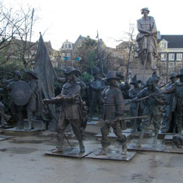
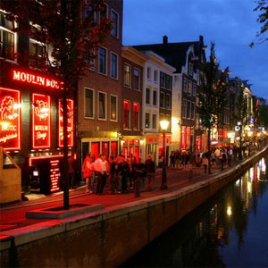
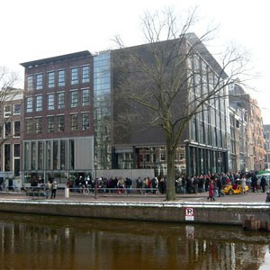

An American in Paris
Amsterdam, Netherlands
While it is true that marijuana is legal in Amsterdam, it is not Amsterdam's only attraction.
Amsterdan may have been the most beautiful city I visited during my time abroad. It is a miz between a quaint villade, and an urban city. The Dutch people are some of the friendliest I have met in my whole life, always willing to help you, or give you directions, it was a nice change from semi-snobby Parisians. My favorite part about Amsterdam is the beautiful cannals and windmills you can find throughout the city.
Instead of staying in a hotel or hostel, we stayed on a 19th century ship in Amsterdam!
 The Nightwatch of Rembrant, Rembrant Square
 The infamous Red Light District of Amsterdam
 The Anne Frank House Museum